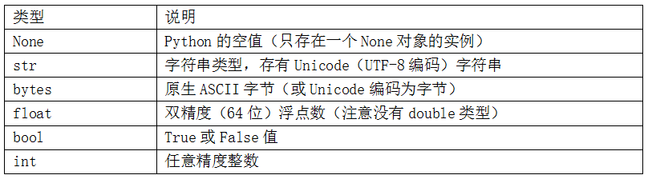

from IPython.core.interactiveshell import InteractiveShell
InteractiveShell.ast_node_interactivity = "all"
注释¶
井号#右侧的文字都会被认为是注释，Python 中没有多行注释。注释与取消注释的快捷键是Ctrl + /，可同时对多行用快捷键进行注释。
Python 数据类型¶
Python的标准库中有一些内建的类型，用于处理数值数据、字符串、布尔值，和日期时间。这些单值类型被称为标量类型，本书中称其为标量。下表列出了主要的标量。日期和时间处理会另外讨论，因为它们是标准库的datetime模块提供的。
之后我们会了解如何通过类（Classes）创建我们自己的类型。
字面常量¶
数字
整数（ Integers），如 2
浮点数（ Floats） ，如 3.23，52.3E-4
字符串
单行字符串：字符串既可以放在单引号中，也可以放在双引号中，效果相同。如果字符串本身包含引号，只含单引号或双引号的情况下，可以将单引号放在双引号内，或将双引号放在单引号内。
多行字符串：你可以通过使用三个引号——
"""或'''来指定多行字符串。 你可以在三引号之间自由地使用单引号与双引号。
'''这是一段多行字符串。 这是它的第一行。
This is the second line.
"What's your name?," I asked.
He said "Bond, James Bond."
'''
'这是一段多行字符串。 这是它的第一行。\nThis is the second line.\n"What\'s your name?," I asked.\nHe said "Bond, James Bond."\n'
字符串操作¶
print函数¶
print函数会打印结果，但是不在Output结果中。
另外，print函数总是会以一个不可见的“新一行”字符（ \n ）
结尾， 因此重复调用 print 将会在相互独立的一行中分别打印。 为防止打印过程中出现这一
换行符， 你可以通过 end 指定其应以空白结尾，或者你通过 end 指定以空格结尾：
print('a', end='')
print('b')
print('a', end=' ')
print('b', end=' ')
print('c')
'a'
'b'
ab
a b c
'a'
'b'
print 函数可以在一行中打印多个变量，包括数字和字符串混排，并且会自动加上空格，下面是例子：
length = 5
breadth = 2
area = length * breadth
print('Area is', area)
print('Perimeter is', 2 * (length + breadth))
Area is 10
Perimeter is 14
转义字符串¶
以反斜杠\开头的可表示一些特殊的字符，如
单引号：
\'双引号：
\"反斜杠自身：
\\换行：
\n制表符：
\t断行：
\，实际字符串不换行，但在引号中输入时换行，以使得输入更加清晰。
print('What\'s your name?')
print('\"What\'s your name?\"')
print('This is the first line\nThis is the second line')
print("This is the first sentence. \
This is the second sentence.")
What's your name?
"What's your name?"
This is the first line
This is the second line
This is the first sentence. This is the second sentence.
原始字符串¶
如果要处理较多的特殊字符（如处理正则表达式时），为了避免大量使用反斜杠，可以使用原始字符串，在字符串前加字母r或R
print(r"Newlines are indicated by \n")
r"Newlines are indicated by \n"
Newlines are indicated by \n
'Newlines are indicated by \\n'
字符串拼接¶
直接用加号：
age = 20
name = 'Swaroop'
name + ' is ' + str(age) + ' years old'
'Swaroop is 20 years old'
字符串的其他方法¶
startwith 方法用于查找字符串是否以给定的字符串内容开头。
in 运算符用以检查给定的字符串是否是查询的字符串中的一部分。
find 方法用于定位字符串中给定的子字符串的位置。 如果找不到相应的子字符串， find会返回 -1。
str 类同样还拥有一个简洁的方法用以 联结（ Join） 序列中的项目， 其中字符串将会作为每一项目之间的分隔符， 并以此生成并返回一串更大的字符串。
# 这是一个字符串对象
name = 'Swaroop'
if name.startswith('Swa'):
print('Yes, the string starts with "Swa"')
if 'a' in name:
print('Yes, it contains the string "a"')
if name.find('war') != -1:
print('Yes, it contains the string "war"')
delimiter = '_*_'
mylist = ['Brazil', 'Russia', 'India', 'China']
print(delimiter.join(mylist))
Yes, the string starts with "Swa"
Yes, it contains the string "a"
Yes, it contains the string "war"
Brazil_*_Russia_*_India_*_China
但这样实现是很丑陋的，而且也容易出错。 其次，转换至字符串的工作将由 format() 方法自动完成，而不是如这般需要明确转换至字符串。 再次， 当时用 format() 方法时，我们可以直接改动文字而不必与变量打交道，反之亦然。
字符串的格式化方法¶
基础用法¶
用 format() 方法：
age = 20
name = 'Swaroop'
print('{0} was {1} years old when he wrote this book'.format(name, age))
print('Why is {0} playing with that python?'.format(name))
# 大括号里的数字只是一个可选选项，还可以写成：
print('{} was {} years old when he wrote this book'.format(name, age))
print('Why is {} playing with that python?'.format(name))
Swaroop was 20 years old when he wrote this book
Why is Swaroop playing with that python?
Swaroop was 20 years old when he wrote this book
Why is Swaroop playing with that python?
更多格式¶
# 大括号里的0表示第0个参数，.3f表示浮点数保留3位小数。format括号里的为目标内容
# 对于浮点数 '0.333' 保留小数点(.)后三位
print('{0:.3f}'.format(1.0/3))
# 使用下划线填充文本， 并保持文字处于中间位置
# 使用 (^) 定义 '___hello___'字符串长度为 11
print('{0:_^11}'.format('hello'))
# 基于关键词输出 'Swaroop wrote A Byte of Python'
print('{name} wrote {book}'.format(name='Swaroop', book='A Byte of Python'))
0.333
___hello___
Swaroop wrote A Byte of Python
内置常量¶
类型转换¶
s = '3.14159'
fval = float(s)
type(fval)
int(fval)
bool(fval)
bool(0)
float
3
True
False
类（ Class）¶
基本概念¶
一个类也可以带有方法（ Method） ， 也就是说对这个类定义仅对于它启用某个函数。 只有当你拥有一个属于该类的对象时， 你才能使用这些功能。 举个例子， Python 为 list 类提供了一种 append 方法， 能够允许你向列表末尾添加一个项目。 例如 mylist.append(‘an item’)将会向列表 mylist 添加一串字符串。 在这里要注意到我们通过使用点号的方法来访问对象。
一个类同样也可以具有字段（ Field） ， 它是只为该类定义且只为该类所用的变量。 只有当你拥有一个属于该类的对象时， 你才能够使用这些变量或名称。 字段同样可以通过点号来访问， 例如 mylist.field 。
字段与方法通称类的属性（ Attribute） .
字段有两种类型——它们属于某一类的各个实例或对象， 或是从属于某一类本身。 它们被分别称作实例变量（ Instance Variables） 与类变量（ Class Variables）。
shoplist = ['apple', 'mango', 'carrot', 'banana']
print('I have', len(shoplist), 'items to purchase.')
print('These items are:', end=' ')
for item in shoplist:
print(item, end=' ')
print('\nI also have to buy rice.')
shoplist.append('rice')
print('My shopping list is now', shoplist)
print('I will sort my list now')
shoplist.sort()
print('Sorted shopping list is', shoplist)
print('The first item I will buy is', shoplist[0])
olditem = shoplist[0]
del shoplist[0]
# shoplist被改变，但olditem并未被移除，因为olditem绑定的是shoplist的元素，是字符串'apple'本身，
# 而del只是删除shoplist[0]和字符串'apple'的关系
print('I bought the', olditem)
print('My shopping list is now', shoplist)
I have 4 items to purchase.
These items are: apple mango carrot banana
I also have to buy rice.
My shopping list is now ['apple', 'mango', 'carrot', 'banana', 'rice']
I will sort my list now
Sorted shopping list is ['apple', 'banana', 'carrot', 'mango', 'rice']
The first item I will buy is apple
I bought the apple
My shopping list is now ['banana', 'carrot', 'mango', 'rice']
类的创建¶
我们通过使用 class 语句与这个类的名称来创建一个新类。 在它之后是一个缩进的语句块， 代表这个类的主体。
我们通过采用类的名称后跟一对括号的方法， 给这个类创建一个对象
class Person:
pass # 一个空的代码块
p = Person()
print(p)
<__main__.Person object at 0x000001C2985671C8>
方法的创建¶
类方法与普通函数只有一种特定的区别——前者必须有一个额外的名字， 这个名字必须添加到参数列表的开头， 但是你不用在你调用这个功能时为这个参数赋值， Python 会为它提供。这种特定的变量引用的是对象本身， 按照惯例， 它被赋予 self 这一名称。尽管你可以为这一参数赋予任何名称， 但是强烈推荐你使用 self 这一名称——其它的任何一种名称绝对会引人皱眉。
在下面的例子中，say_hi 这一方法不需要参数， 但是依旧在函数定义中拥有 self 变量。
class Person:
def say_hi(self):
print('Hello, how are you?')
p = Person()
p.say_hi()
# 前面两行同样可以写作
# Person().say_hi()
Hello, how are you?
__init__ 方法¶
__init__ 方法会在类的对象被实例化（ Instantiated） 时立即运行。 这一方法可以对任何你想进行操作的目标对象进行初始化（ Initialization） 操作。 这里你要注意在 init 前后加上的双下划线。
class Person:
def __init__(self, name):
self.name = name
def say_hi(self):
print('Hello, my name is', self.name)
p = Person('Swaroop')
p.say_hi()
# 前面两行同时也能写作
# Person('Swaroop').say_hi()
Hello, my name is Swaroop
在本例中， 我们定义 __init__ 方法用以接受 name 参数（ 与更普遍的 self 一道） 。 在这里， 我们创建了一个字段， 同样称为 name 。 要注意到尽管它们的名字都是“name”， 但这是两个不相同的变量。 虽说如此， 但这并不会造成任何问题， 因为点号 self.name 意味着这个叫作“name”的东西是某个叫作“self”的对象的一部分， 而另一个 name 则是一个局部变量。 由于我们已经如上这般明确指出了我们所指的是哪一个名字， 所以它不会引发混乱。
当我们在 Person 类下创建新的实例 p 时， 我们采用的方法是先写下类的名称， 后跟括在括号中的参数， 形如： p = Person('Swaroop') 。
我们不会显式地调用 __init__ 方法。 这正是这个方法的特殊之处所在。
现在， 我们可以使用我们方法中的 self.name 字段了， 使用的方法在 say_hi 方法中已经作过说明。
类变量与对象变量¶
字段——只不过是绑定（ Bound） 到类与对象的命名空间（ Namespace）的普通变量。字段（ Filed） 有两种类型——类变量与对象变量， 它们根据究竟是类还是对象拥有这些变量来进行分类。
类变量（ Class Variable） 是共享的（ Shared） ——它们可以被属于该类的所有实例访问。该类变量只拥有一个副本， 当任何一个对象对类变量作出改变时， 发生的变动将在其它所有实例中都会得到体现。
对象变量（ Object variable） 由类的每一个独立的对象或实例所拥有。 在这种情况下， 每个对象都拥有属于它自己的字段的副本， 也就是说， 它们不会被共享， 也不会以任何方式与其它不同实例中的相同名称的字段产生关联。
# coding=UTF-8
class Robot:
"""表示有一个带有名字的机器人。 """
# 一个类变量， 用来计数机器人的数量
population = 0
def __init__(self, name):
"""初始化数据"""
self.name = name
print("(Initializing {})".format(self.name))
# 当有人被创建时， 机器人
# 将会增加人口数量
Robot.population += 1
def die(self):
"""我挂了。 """
print("{} is being destroyed!".format(self.name))
Robot.population -= 1
if Robot.population == 0:
print("{} was the last one.".format(self.name))
else:
print("There are still {:d} robots working.".format(Robot.population))
def say_hi(self):
"""来自机器人的诚挚问候
没问题， 你做得到。 """
print("Greetings, my masters call me {}.".format(self.name))
@classmethod
def how_many(cls):
"""打印出当前的人口数量"""
print("We have {:d} robots.".format(cls.population))
droid1 = Robot("R2-D2")
droid1.say_hi()
Robot.how_many()
droid2 = Robot("C-3PO")
droid2.say_hi()
Robot.how_many()
print("\nRobots can do some work here.\n")
print("Robots have finished their work. So let's destroy them.")
droid1.die()
droid2.die()
Robot.how_many()
(Initializing R2-D2)
Greetings, my masters call me R2-D2.
We have 1 robots.
(Initializing C-3PO)
Greetings, my masters call me C-3PO.
We have 2 robots.
Robots can do some work here.
Robots have finished their work. So let's destroy them.
R2-D2 is being destroyed!
There are still 1 robots working.
C-3PO is being destroyed!
C-3PO was the last one.
We have 0 robots.
在上面的例子中，population 属于 Robot 类， 因此它是一个类变量。 name 变量属于一个对象（ 通过使用 self 分配） ， 因此它是一个对象变量。我们通过 Robot.population 而非 self.population 引用 population 类变量。 我们对于 name 对象变量采用 self.name 标记法加以称呼， 这是这个对象中所具有的方法。 当一个对象变量与一个类变量名称相同时， 类变量将会被隐藏。除了 Robot.popluation ， 我们还可以使用 self.__class__.population ， 因为每个对象都通过self.__class__ 属性来引用它的类。
how_many 实际上是一个属于类而非属于对象的方法。 这就意味着我们可以将它定义为一个classmethod（ 类方法） 或是一个 staticmethod（ 静态方法） ， 这取决于我们是否知道我们需不需要知道我们属于哪个类。 由于我们已经引用了一个类变量， 因此我们使用 classmethod（ 类方法） 。
我们使用装饰器（ Decorator） 将 how_many 方法标记为类方法。装饰器等价于调用：
how_many = classmethod(how_many)
所有的类成员都是公开的。 但有一个例外： 如果你使用数据成员并在其名字中使用双下划线作为前缀， 形成诸如 __privatevar 这样的形式， Python 会使用名称调整（ Namemangling） 来使其有效地成为一个私有变量。
因此， 你需要遵循这样的约定： 任何在类或对象之中使用的变量其命名应以下划线开头， 其它所有非此格式的名称都将是公开的， 并可以为其它任何类或对象所使用。 请记得这只是一个约定， Python 并不强制如此（ 除了双下划线前缀这点） 。
继承与子类¶
先看一个例子：
class SchoolMember:
'''Represents any school member.'''
def __init__(self, name, age):
self.name = name
self.age = age
print('(Initialized SchoolMember: {})'.format(self.name))
def tell(self):
'''Tell my details.'''
print('Name:"{}" Age:"{}"'.format(self.name, self.age), end=" ")
class Teacher(SchoolMember):
'''Represents a teacher.'''
def __init__(self, name, age, salary):
SchoolMember.__init__(self, name, age)
self.salary = salary
print('(Initialized Teacher: {})'.format(self.name))
def tell(self):
SchoolMember.tell(self)
print('Salary: "{:d}"'.format(self.salary))
class Student(SchoolMember):
'''Represents a student.'''
def __init__(self, name, age, marks):
SchoolMember.__init__(self, name, age)
self.marks = marks
print('(Initialized Student: {})'.format(self.name))
def tell(self):
SchoolMember.tell(self)
print('Marks: "{:d}"'.format(self.marks))
t = Teacher('Mrs. Shrividya', 40, 30000)
s = Student('Swaroop', 25, 75)
# prints a blank line
print()
members = [t, s]
for member in members:
# Works for both Teachers and Students
member.tell()
(Initialized SchoolMember: Mrs. Shrividya)
(Initialized Teacher: Mrs. Shrividya)
(Initialized SchoolMember: Swaroop)
(Initialized Student: Swaroop)
Name:"Mrs. Shrividya" Age:"40" Salary: "30000"
Name:"Swaroop" Age:"25" Marks: "75"
标识符命名¶
Python 中，变量只需被赋予某一值。 不需要声明或定义数据类型。变量名也称标识符，标识符命名规则如下：
标识符名称区分大小写。 例如， myname 和 myName 并不等同。 要注意到前者是小写字母 n 而后者是大写字母 N 。
只能以大小写字母a~z、A~Z、或下划线（ _ ）开头。
标识符的其它部分可以由字母、下划线（ _ ）、数字（ 0 ~ 9 ）组成。
不能与其他保留命名符重复，如
for
运算符¶
常见运算符¶
表达式可以拆分成运算符（ Operators） 与操作数（ Operands） 。运算符（ Operators） 是进行某些操作， 并且可以用诸如 + 等符号或特殊关键词加以表达的功能。 运算符需要一些数据来进行操作， 这些数据就被称作操作数（ Operands） 。 例如2+3中 2 和 3 就是操作数。
赋值，只能用等号=，可以连续赋值或合并赋值，如：
a=b=c=1
print(a)
print(b+1)
d,e=3,4
print(d)
print(e)
1
2
3
4
其他常见运算符如下：
十进制算数运算
加：
+，字符串相加表示拼接，字符串没有相减操作。'a' + 'b'则输出'ab'，但'ab'-'b'是非法的。减：
-，或者负数乘：
*，字符串乘数字，代表字符串重复指定次数后的结果，如'la' * 3输出'lalala'除：
/，整数之间相除，可以直接得到浮点数，如1/3结果为0.3333333333333333，不必刻意写成1.0/3乘方：只能用
**，不能用^，因为在Python中^表示按位异或取模（余数）：
%，可以在浮点数、负数之间用余数运算，13 % 3输出1。-25.5 % 2.25输出1.5。整除：
//，x 除以 y 并对结果向下取整至最接近的整数，13 // 3输出4，-13 // 3输出-5
转二进制算数运算
左移：
<<，将数字的位向左移动指定的位数，2 << 2输出8。2用二进制数表示为10，向左移2位会得到1000这一结果， 表示十进制中的8。右移：
>>，将数字的位向左移动指定的位数，11 >> 1输出5。11用二进制数表示为1011，向右移1位会得到101这一结果， 表示十进制中的5。按位与：
&，对数字进行按位与操作，5 & 3输出1。按位或：
|，对数字进行按位或操作，5 | 3输出7。按位异或：
^，对数字进行按位异或操作，5 ^ 3输出6。按位取反：
~，对数字进行按位取反操作，x 的按位取反结果为 -(x+1)，~5输出-6。有关本例的更多细节可以参阅： http://stackoverflow.com/a/11810203
关系运算
大于：
>小于：
<大于等于：
>=小于等于：
<=等于：
==不等于：
!=以上关系运算性质：
所有的比较运算符返回的结果均为
True或False，请注意这些名称之中的大写字母。比较可以任意组成链接：
3 < 5 < 7返回True。可以比较两个字符串，按字典顺序在前的为小。
可以比较其他对象，如元组，某一元素小于，其他元素不大于，则判定为小于
数字和字符串不能比较，会报错。
成员资格测试（ Membership Tests） 和身份测试（ Identity Tests）
in
not in
is
not is
逻辑运算
逻辑与：
and，当x是False时，x = False; y = True; x and y将返回False。 在这一情境中，Python 将不会计算y， 因为它已经了解and表达式的左侧是False， 这意味着整个表达式都将是False而不会是别的值。 这种情况被称作短路计算（ Short-circuit Evaluation）逻辑或：
or，在这里短路计算同样适用。逻辑非：
not，x = Ture; not x返回False。
其他
快捷赋值：
变量 运算 = 表达式等价于变量 = 变量 运算 表达式a *= 3等价于a = a * 3a += 3等价于a = a + 3其余十进制算数运算与转二进制算数运算都可以照此
结合律括号、函数括号：
( )单行代码分隔：
;索引：
[ ]创建数列、字典：
:、{key: value...}帮助：
?转义字符：
\
3**4
3^4
1/3
81
7
0.3333333333333333
'a'<'b'
'2020-02-29'<'2021-02-28'
# 2<'3'
'str'=='str'
'str'!='stR'
(3.1-1.1,'so')==(2,'s'+'o')
(2,'a')<(3,'b')
(2,'a')<(2,'b')
(2,'a')<(1,'b')
(2,1)<(1,3)
True
True
True
True
True
True
True
False
False
a=2
a *= 3
a
a += 1
a
a /= 3
a
a %= 2
a
a //= 0.1
a
a **=2
a
a=9
a ^= 2
a
6
7
2.3333333333333335
0.3333333333333335
3.0
9.0
11
运算优先级¶
运算符的优先级按下面的表给出，上面的优先级高于下面，在下表中位列同一行的运算符具有相同优先级，一般从左至右的方式依次进行求值。圆括号可以改变优先级。
运算符 |
含义 |
|---|---|
|
显示绑定或数组、 显示列表、 显示字典、 显示设置 |
|
下标、 切片、 调用、 属性引用 |
|
乘方 |
|
正、负、按位取反 |
|
乘、除、整除、取余 |
|
加、减 |
|
移动 |
|
按位与 |
|
按位异或 |
|
按位或 |
|
比较运算符 |
|
逻辑非 |
|
逻辑与 |
|
逻辑或 |
|
条件表达式 |
|
lambda表达式 |
换行¶
分号与多逻辑行¶
所谓物理行（Physical Line）是你在编写程序时，你所看到的内容。所谓逻辑行（Logical Line）是 Python 所看到的单个语句。 Python 会假定每一物理行会对应一个逻辑行。一般来说，代码之后无需结束符号。
可以用1行代码执行多条语句，每条代码之间用分号 ; 分隔。但并不推荐这种用法，不推荐在任何地方使用分号。
i = 5; print(i);
# 等同于
i = 5
print(i)
5
5
反斜杠与显式行连接¶
当1条语句太长，也可以分在多行，这时可以通过使用反斜杠（\）将其拆分成多个物理行。 这被称作显式行连接（ Explicit Line Joining）。
i = \
5
# 等同于
i = 5
"this is a long string \
without error"
'this is a long string without error'
等同于
"this is a long string without error"
# 以下会报错：SyntaxError: EOL while scanning string literal
# "this is a long string
# with error"
'this is a long string without error'
在 R 中，多行字符串也可以直接用单引号或双引号包围，但在 Python 中只能用三引号包围。
"""this is a long string
with \n when break the line"""
'this is a long string \n with \n when break the line'
括号与隐式行连接¶
在一些特别场景下，也可省略反斜杠实现单逻辑行分布在多物理行中。包括逻辑行以括号开始，它可以是方括号或花括号，但不能是结束括号。可以在前括号或逗号后断行。这被称作隐式行连接（Implicit Line Joining）。注意不能在二元连接符如加号后断开。
print(
'abc',
end=' '
)
#等价于
print('abc',end=' ')
abc abc
代码块与缩进¶
Python使用缩进来确定代码块分组，缩进可以是空格或制表符，错误的缩进可能会导致错误。使用四个空格来缩进。 这是来自 Python 语言官方的建议。 Python 将始终对块使用缩进， 并且绝不会使用大括号。 你可以通过运行 from__future__ import braces 来了解更多信息。
i = 5
# 下面将发生错误， 注意行首有一个空格
print('Value is', i)
print('I repeat, the value is', i)
控制流¶
控制流语句不是函数，其后不需要用括号包围条件，但是条件后需要打冒号，这对 if、while、for、函数中的 return 语句都适用。
条件语句¶
基本结构为 if..elif..else，每个条件下都要有冒号引出结果。简单情况下 elif 和 else 部分都是可省略的，复杂情况下可以进行if..elif..else的嵌套。Python 中不存在 switch 语句。 你可以通过使用 if..elif..else 语句来实现同样的事情（ 在某些情况下，使用一个字典结构能够更快速地完成）。
# 最小规模且有效的 if 语句是这样的，注意冒号和缩进，不用括号：
if True:
print('Yes, it is true')
# 一个典型结构的条件语句
number = 23
guess = int(input('Enter an integer : '))
if guess == number:
# 新块从这里开始
print('Congratulations, you guessed it.')
print('(but you do not win any prizes!)')
# 新块在这里结束
elif guess < number:
# 另一代码块
print('No, it is a little higher than that')
# 你可以在此做任何你希望在该代码块内进行的事情
else:
print('No, it is a little lower than that')
# 你必须通过猜测一个大于（ >） 设置数的数字来到达这里。
print('Done')
# 这最后一句语句将在
# if 语句执行完毕后执行。
Yes, it is true
---------------------------------------------------------------------------
StdinNotImplementedError Traceback (most recent call last)
<ipython-input-27-9493bf827e55> in <module>
5 # 一个典型结构的条件语句
6 number = 23
----> 7 guess = int(input('Enter an integer : '))
8
9 if guess == number:
D:\ProgramData\Anaconda3\lib\site-packages\ipykernel\kernelbase.py in raw_input(self, prompt)
853 if not self._allow_stdin:
854 raise StdinNotImplementedError(
--> 855 "raw_input was called, but this frontend does not support input requests."
856 )
857 return self._input_request(str(prompt),
StdinNotImplementedError: raw_input was called, but this frontend does not support input requests.
循环语句¶
实现循环包括 while 、 for 语句、列表推导等手段。
while语句¶
基本结构为 while..else，每个条件下都要有冒号引出结果。简单情况下 else 部分都是可省略的。break 语句为跳出整个循环，而 continue 语句则是跳出当前循环，进入下一个循环。
import random
number = random.randint(0, 100)
running = True
while running:
guess = input('Enter an integer : ')
if guess in ('q','Q','quit','Quit','QUIT'):
break
else:
try:
guess = int(guess)
except ValueError:
print("Error: input must be an integer")
else:
if guess == number:
print('Congratulations, you guessed it.')
chose = input("Do you want to guess again? Enter 'Y' for 'yes' or 'N' for 'no'")
if chose == 'Y' :
number = random.randint(0, 100)
continue
elif chose == 'N' :
break
else:
print('Error:wrong input. The program will end.')
# 这将导致 while 循环中止
break
elif guess < number:
print('No, it is a little higher than that.')
else:
print('No, it is a little lower than that.')
else:
print('The while loop is over.')
# 在这里你可以做你想做的任何事
print('Done')
Enter an integer : n
Error: input must be an integer
Enter an integer : q
Done
for循环¶
for...in 语句会遍历序列中的每一个项目。break 语句为跳出整个循环，而 continue 语句则是跳出当前循环，进入下一个循环。这对for循环也适用。注意 for 循环后也要有冒号。for...in 语句能在任何队列中工作。
for i in range(1, 5):
print(i)
else:
print('The for loop is over')
1
2
3
4
The for loop is over
列表推导¶
列表推导（ List Comprehension） 用于从一份现有的列表中得到一份新列表。 使用列表推导的优点在于， 当我们使用循环来处理列表中的每个元素并将其存储到新的列表中时时， 它能减少样板（ Boilerplate） 代码的数量。
listone = [2, 3, 4]
listtwo = [2*i for i in listone if i > 2]
print(listtwo)
[6, 8]
函数¶
函数基本定义、默认值与关键字参数¶
函数可以通过关键字 def 来定义。 这一关键字后跟一个函数的标识符名称， 再跟一对圆括号， 其中可以包括一些变量的名称， 再以冒号结尾。随后而来的语句块是函数的一部分。
你可以通过在函数定义时附加一个赋值运算符（ = ） 来为参数指定默认参数值。要注意到， 默认参数值应该是常数。 更确切地说， 默认参数值应该是不可变的。只有那些位于参数列表末尾的参数才能被赋予默认参数值， 意即在函数的参数列表中拥有默认参数值的参数不能位于没有默认参数值的参数之前。
如果你有一些具有许多参数的函数， 而你又希望只对其中的一些进行指定， 那么你可以通过命名它们来给这些参数赋值——这就是关键字参数（ Keyword Arguments） ——我们使用命名（ 关键字） 而非位置（ 一直以来我们所使用的方式） 来指定函数中的参数。
# 系统建议，函数结束后，空两行再开始其他程序
# 函数与之前的程序，也需要有两行的间隔
# y=2为默认形参的例子
def pow(x,y=2):
result = x ** y
return result
# 上面的x、y为形参，a、b为实参
a = 2
b = 3
pow(a,b)
pow(x=a,y=b)
# 关键字参数的例子，用命名指定参数时，就不必按原函数参数的位置来指定了
pow(y=a,x=b)
# 使用默认实参的例子
pow(x=a)
8
8
9
4
可变参数¶
有时你可能想定义的函数里面能够有任意数量的变量， 也就是参数数量是可变的， 这可以通过使用星号来实现。
当我们声明一个诸如 *param 的星号参数时， 从此处开始直到结束的所有位置参数（ Positional Arguments） 都将被收集并汇集成一个称为“param”的元组（ Tuple） 。
类似地， 当我们声明一个诸如 **param 的双星号参数时， 从此处开始直至结束的所有关键字参数都将被收集并汇集成一个名为 param 的**字典（ Dictionary） **。
def total(a=5, *numbers, **phonebook):
print('a', a)
#遍历元组中的所有项目
for single_item in numbers:
print('single_item', single_item)
#遍历字典中的所有项目
for first_part, second_part in phonebook.items(): # 对字典类型数据的常用方法
print(first_part,second_part)
print(total(10,1,2,3,Jack=1123,John=2231,Inge=1560))
def powersum(power, *args):
"""Return the sum of each argument raised to the specified power."""
total = 0
for i in args:
total += pow(i, power)
return total
powersum(2, 3, 4)
powersum(2, 10)
a 10
single_item 1
single_item 2
single_item 3
Jack 1123
John 2231
Inge 1560
None
25
100
return 语句¶
return 语句用于从函数中返回， 也就是中断函数。 我们也可以选择在中断函数时从函数中返回一个值。
return 语句返回的变量无须用括号括起来，可以返回（由多个值组成的）元组，则元组本身被圆括号包围。
函数中如果省略 return 语句，则意味着 return None，而非返回函数中最后的结果。
可以仅写一个 return，也代表 return None。Python 中的 pass 语句用于指示一个没有内容的语句块。
def maximum(x, y):
if x > y:
return x
elif x == y:
return 'The numbers are equal'
else:
return y
print(maximum(2, 3))
def get_error_details():
return (2, 'details') # 返回（由多个值组成的）元组
errnum, errstr = get_error_details() # 元组的括号可以省略
errnum
errstr
3
2
'details'
Lambda 函数（匿名函数）¶
很多函数以函数为输入参数，这时写一段正式的函数显得冗长，匿名函数使得这种场景非常简洁
equiv_anon = lambda x: x * 2
等价于
def short_function(x):
return x * 2
def apply_to_list(some_list, f):
return [f(x) for x in some_list]
ints = [4, 0, 1, 5, 6]
apply_to_list(ints, lambda x: x * 2)
[8, 0, 2, 10, 12]
假设有一组字符串，你想要根据各字符串不同字母的数量对其进行排序
strings = ['foo', 'card', 'bar', 'aaaa', 'abab']
strings.sort(key=lambda x: len(set(list(x)))) # sort方法中，key参数需要输入一个函数
strings
['aaaa', 'foo', 'abab', 'bar', 'card']
help(strings.sort)
Help on built-in function sort:
sort(*, key=None, reverse=False) method of builtins.list instance
Stable sort *IN PLACE*.
函数文档字符串（DocStrings）¶
函数的第一行逻辑行中的字符串是该函数的 文档字符串（ DocString） 。 这里要注意文档字符串也适用于后面相关章节将提到的模块（ Modules） 与类（ Class） 。
该文档字符串所约定的是一串多行字符串（在python3中用三双引号，而不是三单引号将其括起来）， 其中第一行以某一大写字母开始， 以句号结束。第二行为空行， 后跟的第三行开始是任何详细的解释说明。 在此强烈建议你在你所有重要功能的所有文档字符串中都遵循这一约定。
我们可以通过使用函数的 __doc__ （ 注意其中的双下划线） 属性（ 属于函数的名称） 来获取函数的文档字符串属性。help() 函数获取函数的 __doc__ 属性并以一种整洁的方式将其呈现给你。要记住你可以通过按下 q 键来退出 help 。
def print_max(x, y):
"""Prints the maximum of two numbers.打印两个数值中的最大数。
The two values must be integers.这两个数都应该是整数"""
# 如果可能， 将其转换至整数类型
x = int(x)
y = int(y)
if x > y:
print(x, 'is maximum')
else:
print(y, 'is maximum')
print_max(3, 5)
print(print_max.__doc__)
help(print_max)
5 is maximum
Prints the maximum of two numbers.打印两个数值中的最大数。
The two values must be integers.这两个数都应该是整数
Help on function print_max in module __main__:
print_max(x, y)
Prints the maximum of two numbers.打印两个数值中的最大数。
The two values must be integers.这两个数都应该是整数
局部变量与全局变量¶
当你在一个函数的定义中声明变量时， 它们不会以任何方式与身处函数之外但具有相同名称的变量产生关系， 也就是说， 这些变量名只存在于函数这一局部（ Local） 。 当在函数中使用global 语句声明时，变量将是全局有效的。你可以在同一句 global 语句中指定不止一个的全局变量， 例如 global x, y, z 。
x = 50
def func(x):
print('x is', x)
x = 2
print('Changed local x to', x)
func(x)
print('x is still', x)
x = 50
def func():
global x
print('x is', x)
x = 2
print('Changed global x to', x)
func()
print('Value of x is', x)
x is 50
Changed local x to 2
x is still 50
x is 50
Changed global x to 2
Value of x is 2
作为对象的函数与函数复用¶
函数也是对象，可以作为其他函数的参数。想要将一个函数用于一个序列的多个元素，可以用map函数，但需要用list函数来实例化。
s = ['a', 'as', 'bat', 'car', 'dove', 'python']
len(s) # 列表本身的长度
m = map(len,s) # map对象
m
list(m) # 实例化，每个元素字符串的长度
6
<map at 0x225701985c8>
[1, 2, 3, 3, 4, 6]
模块（ Modules）¶
如果你想在你所编写的别的程序中重用一些函数的话，你需要用到模块。一个模块可以被其它程序导入并运用其功能。
编写模块有很多种方法， 其中最简单的一种便是创建一个包含函数与变量、 以 .py 为后缀的文件。另一种方法是使用撰写 Python 解释器本身的本地语言来编写模块。 举例来说， 你可以使用 C语言来撰写 Python 模块， 并且在编译后， 你可以通过标准 Python 解释器在你的 Python 代码中使用它们。
模块的导入¶
我们通过 import 语句导入模块。如果是一个内置模块， Python 知道应该在哪里找到它。如果它不是一个已编译好的模块， 即用 Python 编写的模块， 那么 Python 解释器将从它的sys.path 变量所提供的目录中进行搜索。 初始化工作只需在我们第一次导入模块时完成。
如果你希望直接将 argv 变量导入你的程序（ 为了避免每次都要输入 sys. ） ， 那么你可以通过使用 from sys import argv 语句来实现这一点。一般来说， 你应该尽量避免使用 from…import 语句， 而去使用 import 语句。这是为了避免在你的程序中出现名称冲突， 同时也为了使程序更加易读。
以下代码保存为 module_using_sys.py，且放在导入该模块的同一目录下。
import sys
print('The command line arguments are:')
for i in sys.argv:
print(i)
print('\n\nThe PYTHONPATH is', sys.path, '\n')
# 命令行中导入模块
! python module_using_sys.py we are arguments
The command line arguments are:
module_using_sys.py
we
are
arguments
The PYTHONPATH is ['C:\\Users\\guoxiao133\\00_Jupyter_Notebook\\Python_learning', 'D:\\ProgramData\\Anaconda3\\python37.zip', 'D:\\ProgramData\\Anaconda3\\DLLs', 'D:\\ProgramData\\Anaconda3\\lib', 'D:\\ProgramData\\Anaconda3', 'D:\\ProgramData\\Anaconda3\\lib\\site-packages', 'D:\\ProgramData\\Anaconda3\\lib\\site-packages\\win32', 'D:\\ProgramData\\Anaconda3\\lib\\site-packages\\win32\\lib', 'D:\\ProgramData\\Anaconda3\\lib\\site-packages\\Pythonwin']
# 程序中导入模块的3中方式
import sys
from math import sqrt
print("Square root of 16 is", sqrt(16))
from mymodule import *
Square root of 16 is 4.0
模块的 __name__¶
每个模块都有一个名称， 而模块中的语句可以找到它们所处的模块的名称。 这对于确定模块是独立运行的还是被导入进来运行的这一特定目的来说大为有用。 正如先前所提到的， 当模块第一次被导入时， 它所包含的代码将被执行。 我们可以通过这一特性来使模块以不同的方式运行， 这取决于它是为自己所用还是从其它从的模块中导入而来。 这可以通过使用模块的 __name__ 属性来实现。
以下代码保存为 module_using_name.py，且放在导入该模块的同一目录下。
if __name__ == '__main__':
print('This program is being run by itself')
else:
print('I am being imported from another module')
! python module_using_name.py
import module_using_name
This program is being run by itself
I am being imported from another module
编写你自己的模块¶
我们一般所使用的 Python 的程序相比其实并没有什么特殊的区别。它可以是函数，也可以包含任意其他对象。你只需要保证它以 .py 为扩展名即可（后缀如果有空格会无法找到该模块）。要记住该模块应该放置于与其它我们即将导入这一模块的程序相同的目录下， 或者是放置在sys.path 所列出的其中一个目录下。
import * 模式会导入诸如 say_hi 等所有公共名称， 但不会导入 __version__ 名称， 因为后者以双下划线开头。你应该避免使用 import-star 这种形式， 即 from mymodule import * 。
以下代码保存为 mymodule.py，且放在导入该模块的同一目录下。
def say_hi():
print('Hi, this is mymodule speaking.')
__version__ = '0.1'
import mymodule
mymodule.say_hi()
print('Version', mymodule.__version__)
from mymodule import say_hi, __version__
say_hi()
print('Version', __version__)
from mymodule import *
Hi, this is mymodule speaking.
Version 0.1
Hi, this is mymodule speaking.
Version 0.1
dir 函数¶
内置的 dir() 函数能够返回由对象所定义的名称列表（相当于包含哪些子对象）。 如果这一对象是一个模块， 则该列表会包括函数内所定义的函数、 类与变量。
该函数接受参数。 如果参数是模块名称， 函数将返回这一指定模块的名称列表。 ~~如果没有提供参数， 函数将返回当前模块的名称列表（似乎并不是这样，最好带上参数）。~~
# import sys
# dir(sys)
# dir()
a = 5
dir()
# del a
# dir()
['In',
'InteractiveShell',
'Out',
'Person',
'Robot',
'SchoolMember',
'Student',
'Teacher',
'_',
'_11',
'_19',
'_2',
'_20',
'_21',
'_23',
'_24',
'_25',
'_28',
'_3',
'_32',
'_33',
'_34',
'_35',
'_36',
'_40',
'_6',
'_7',
'__',
'___',
'__builtin__',
'__builtins__',
'__doc__',
'__loader__',
'__name__',
'__package__',
'__spec__',
'__version__',
'_dh',
'_exit_code',
'_i',
'_i1',
'_i10',
'_i11',
'_i12',
'_i13',
'_i14',
'_i15',
'_i16',
'_i17',
'_i18',
'_i19',
'_i2',
'_i20',
'_i21',
'_i22',
'_i23',
'_i24',
'_i25',
'_i26',
'_i27',
'_i28',
'_i29',
'_i3',
'_i30',
'_i31',
'_i32',
'_i33',
'_i34',
'_i35',
'_i36',
'_i37',
'_i38',
'_i39',
'_i4',
'_i40',
'_i41',
'_i42',
'_i43',
'_i44',
'_i45',
'_i5',
'_i6',
'_i7',
'_i8',
'_i9',
'_ih',
'_ii',
'_iii',
'_oh',
'a',
'age',
'apply_to_list',
'area',
'b',
'breadth',
'c',
'd',
'delimiter',
'droid1',
'droid2',
'e',
'errnum',
'errstr',
'exit',
'func',
'fval',
'get_error_details',
'get_ipython',
'guess',
'i',
'ints',
'item',
'length',
'listone',
'listtwo',
'm',
'maximum',
'member',
'members',
'module_using_name',
'mylist',
'mymodule',
'name',
'number',
'olditem',
'p',
'pow',
'powersum',
'print_max',
'quit',
'random',
'running',
's',
'say_hi',
'shoplist',
'smaller',
'sqrt',
'strings',
'sys',
't',
'total',
'x',
'y']
dir(a)
['__abs__',
'__add__',
'__and__',
'__bool__',
'__ceil__',
'__class__',
'__delattr__',
'__dir__',
'__divmod__',
'__doc__',
'__eq__',
'__float__',
'__floor__',
'__floordiv__',
'__format__',
'__ge__',
'__getattribute__',
'__getnewargs__',
'__gt__',
'__hash__',
'__index__',
'__init__',
'__init_subclass__',
'__int__',
'__invert__',
'__le__',
'__lshift__',
'__lt__',
'__mod__',
'__mul__',
'__ne__',
'__neg__',
'__new__',
'__or__',
'__pos__',
'__pow__',
'__radd__',
'__rand__',
'__rdivmod__',
'__reduce__',
'__reduce_ex__',
'__repr__',
'__rfloordiv__',
'__rlshift__',
'__rmod__',
'__rmul__',
'__ror__',
'__round__',
'__rpow__',
'__rrshift__',
'__rshift__',
'__rsub__',
'__rtruediv__',
'__rxor__',
'__setattr__',
'__sizeof__',
'__str__',
'__sub__',
'__subclasshook__',
'__truediv__',
'__trunc__',
'__xor__',
'bit_length',
'conjugate',
'denominator',
'from_bytes',
'imag',
'numerator',
'real',
'to_bytes']
包（Packages）¶
包是用以组织模块的另一种层次结构。包需要被组织为一个包含模块与一个特殊的 __init__.py 文件的文件夹， 后者向 Python 表明这一文件夹是特别的， 因为其包含了 Python 模块。下面是一个包的文件夹的结构。
- <some folder present in the sys.path>/
- world/
- __init__.py
- asia/
- __init__.py
- india/
- __init__.py
- foo.py
- africa/
- __init__.py
- madagascar/
- __init__.py
- bar.py
可以在 https://pypi.org/ 中搜索Python包，用pip安装包。
常用函数¶
常用数学函数、统计函数、概率函数见NumPy包，在数据结构一章中讲述。其他常用函数有：
管理工作空间¶
获取帮助¶
调试¶
简单调试参考 https://blog.csdn.net/dlhlSC/article/details/84309410
Jupyter Notebook 可视化调试参考 https://medium.com/codait/the-visual-python-debugger-for-jupyter-notebooks-youve-always-wanted-761713babc62
Jupyter Lab 可视化调试参考 https://juejin.im/entry/5e815737518825737e0f69a2
异常处理¶
参考 https://bop.mol.uno/16.exceptions.html ，待整理。包括更多中的assert 语句、装饰器。
输入与输出¶
字符串¶
对字符串而言，输入和输出可以分别用input() 函数与 print 函数。
文本文件¶
对文件来说，你可以通过创建一个属于 file 类的对象并适当使用它的 read、readline、write 方法来打开或使用文件，并对它们进行读取或写入。读取或写入文件的能力取决于你指定以何种方式打开文件。最后，当你完成了文件，你可以调用 close 方法来告诉 Python 我们已经完成了对该文件的使用。
poem = '''\
Programming is fun
When the work is done
if you wanna make your work also fun:
use Python!
'''
# 打开文件以编辑（'w'riting）
f = open('poem.txt', 'w')
# 向文件中编写文本
f.write(poem)
# 关闭文件
f.close()
# 如果没有特别指定，
# 将假定启用默认的阅读（'r'ead）模式
f = open('poem.txt')
while True:
line = f.readline()
# 零长度指示 EOF
if len(line) == 0:
break
# 每行（`line`）的末尾
# 都已经有了换行符
#因为它是从一个文件中进行读取的
print(line, end='')
# 关闭文件
f.close()
95
Programming is fun
When the work is done
if you wanna make your work also fun:
use Python!
使用内置的 open 函数并指定文件名以及我们所希望使用的打开模式来打开一个文件。打开模式可以是阅读模式（’r’），写入模式（’w’）和追加模式（’a’）。我们还可以选择是通过文本模式（’t’）还是二进制模式（’b’）来读取、写入或追加文本。实际上还有其它更多的模式可用，help(open) 会给你有关它们的更多细节。在默认情况下，open() 会将文件视作文本（text）文件，并以阅读（read）模式打开它。
Pickle¶
Python 提供了一个叫作 Pickle 的标准模块，通过它你可以将任何纯 Python 对象存储到一个文件中，并在稍后将其取回。这叫作持久地（Persistently）存储对象。
import pickle
# 我们存储相关对象的文件的名称
shoplistfile = 'shoplist.data'
# 需要购买的物品清单
shoplist = ['apple', 'mango', 'carrot']
# 准备写入文件
f = open(shoplistfile, 'wb')
# 转储对象至文件
pickle.dump(shoplist, f)
f.close()
# 清除 shoplist 变量
del shoplist
# 重新打开存储文件
f = open(shoplistfile, 'rb')
# 从文件中载入对象
storedlist = pickle.load(f)
print(storedlist)
['apple', 'mango', 'carrot']
编码¶
Unicode¶
如果你正在使用 Python 2，我们又希望能够读写其它非英语语言，我们需要使用 unicode 类型，它全都以字母 u 开头，例如 u”hello world”。
当我们阅读或写入某一文件或当我们希望与互联网上的其它计算机通信时，我们需要将我们的 Unicode 字符串转换至一个能够被发送和接收的格式，这个格式叫作“UTF-8”。我们可以在这一格式下进行读取与写入，只需使用一个简单的关键字参数到我们的标准 open 函数中
每当我们诸如上面那番使用 Unicode 字面量编写一款程序时，我们必须确保 Python 程序已经被告知我们使用的是 UTF-8，因此我们必须将 # encoding=utf-8 这一注释放置在我们程序的顶端。
我们使用 io.open 并提供了“编码（Encoding）”与“解码（Decoding）”参数来告诉 Python 我们正在使用 Unicode。
# encoding=utf-8
import io
f = io.open("abc.txt", "wt", encoding="utf-8")
f.write(u"中文")
f.close()
text = io.open("abc.txt", encoding="utf-8").read()
print(text)
2
中文